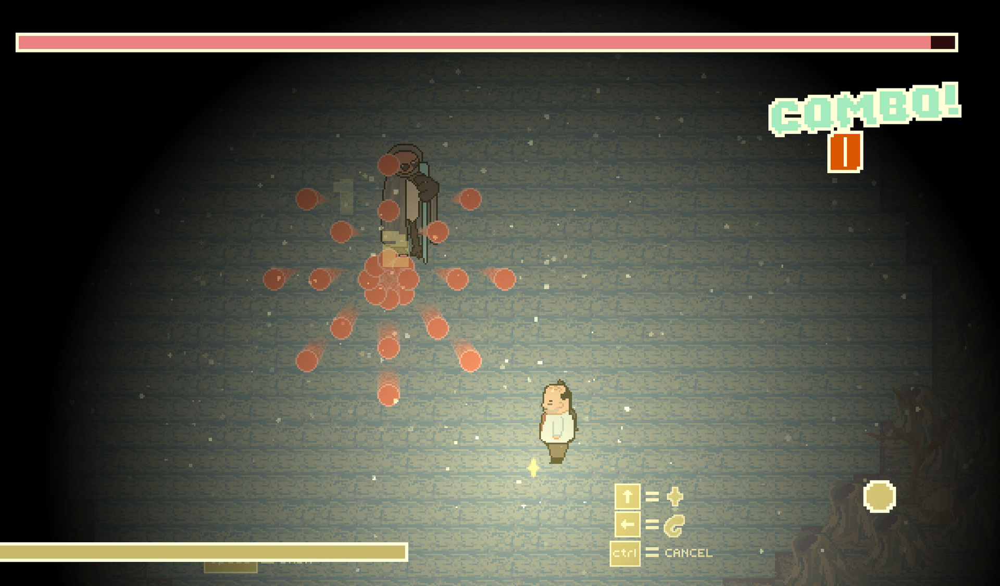
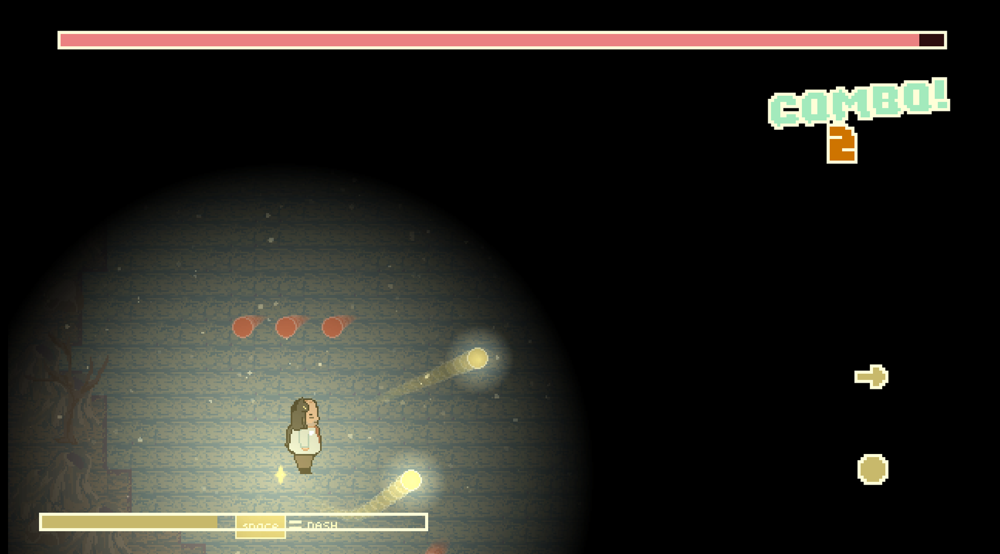
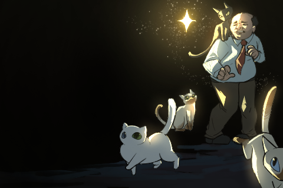
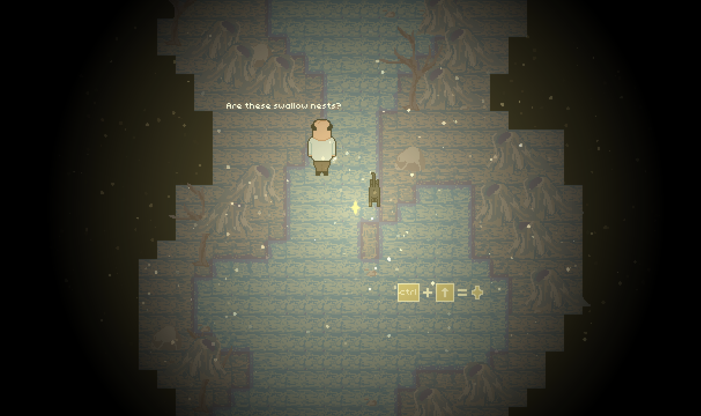
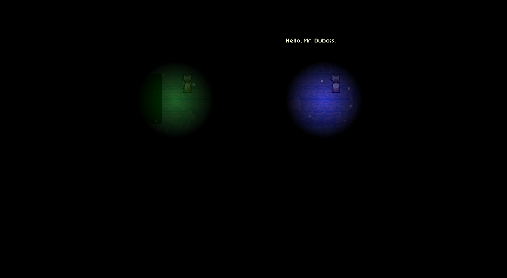
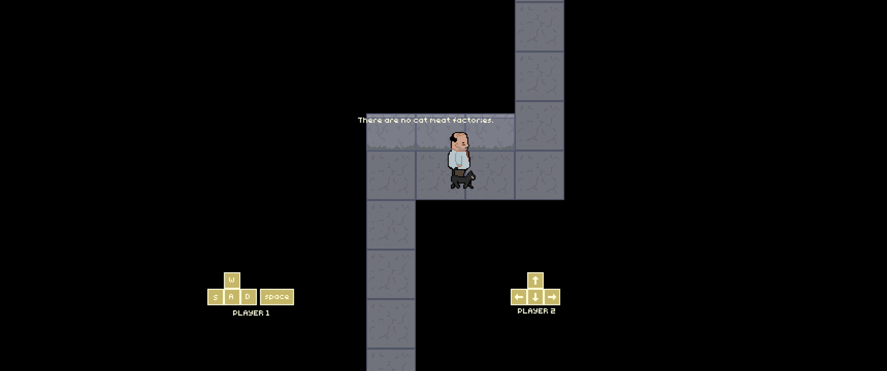
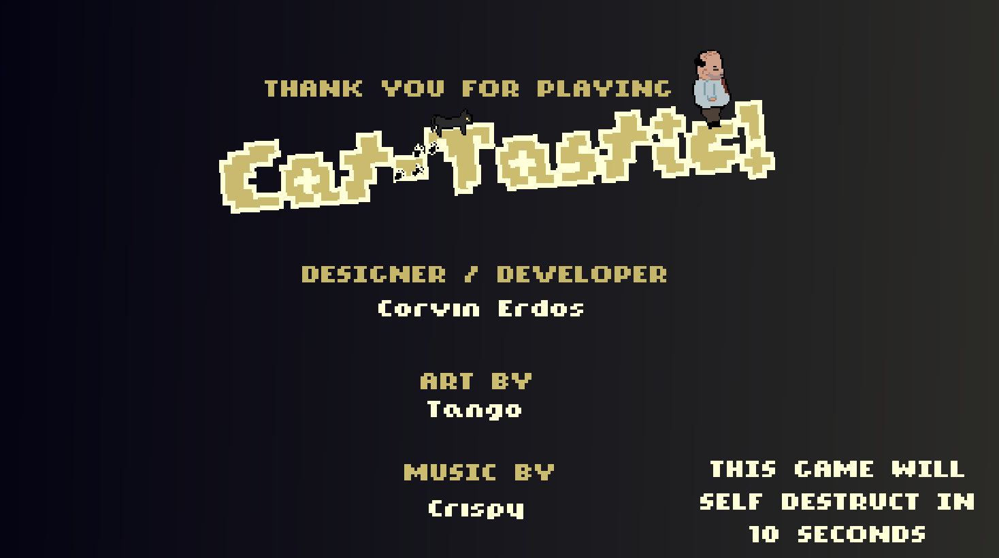

CAT-TASTIC
Two-player couch co-op. One cat can see. One man cannot. A bullet-hell x rhythm game made in 48 hours for the "Total Darkness" themed gm(48). Cat detective Mr. Dubois and his cat Coco fall into a realm of sentient birds, one player dodging bullet-hell attacks while the other plays a rhythm game to fire spells.
Team of 3 — design & development: Corvin Erdos · art: Tango · music: Crispy
// GAMEPLAY_VIDEO
// KEY_RESPONSIBILITIES
Headed a 3-person team through a 48-hour jam, authoring the GDD and designing the game's systems.
Balanced the bullet-hell combat and tuned gameplay feel for two players sharing one screen.
Tuned the rhythm mechanic that powers the second player's spells, and worked on the game's dialogue.
// DESIGN_SPOTLIGHT
ONE CAT CAN SEE. ONE MAN CANNOT.
I admire the recently lost art of couch co-op games, so for the "Total Darkness" theme, the game is split across two players. Player 1 dodges bullet-hell attacks with WASD and Space, while Player 2 plays a rhythm game on the arrow keys to shoot spells — two genres running on one screen at once. It can be played solo, but it's significantly harder.


// SCREENSHOT_LOG




